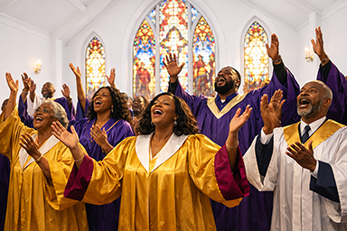
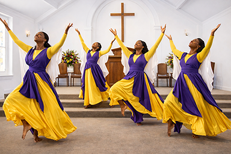

Welcome to Our Family
Whether you are searching for a new church home or just visiting for the first time, we are so glad you're here. At JJCF, we believe that everyone has a place at the table. Our community is built on the foundation of God's love, and we strive to create an environment where you can feel at peace, accepted, and inspired. We invite you to come as you are and discover the warmth of a community that walks together in faith.
Our heart is to love God, love people, and serve the world. We aren't just a building; we are a movement of people dedicated to following the teachings of Jesus in our modern lives. By grounding ourselves in scripture and opening our hearts to the Holy Spirit, we seek to be a lighthouse of hope in our neighborhood. We are committed to fostering spiritual growth and providing a space where faith becomes action through local outreach and global missions.
We have been commissioned to:
- SEEK - The Souls of lost mankind
- SAVE - Those whom we find
- SHELTER - Spiritually those we call Partners
- SERVE - Faithfully God and each other
We have been commissioned by God to actively seek the souls of lost mankind, reaching beyond our walls to share the love, truth, and hope found in Jesus Christ. Through compassionate outreach and genuine relationships, we strive to save those whom we find by leading them toward spiritual renewal, restoration, and a personal walk of faith rooted in God's Word.
As a church family, we are also called to shelter, to provide spiritual covering, encouragement, and discipleship for those we call Partners, nurturing growth and maturity in Christ. In all that we do, we commit to serve faithfully, honoring God while supporting one another with humility, love, and unity, living out our faith through action both within our church and throughout our community.
Rooted in this calling, we embrace our mission with purpose and obedience, trusting God to guide our steps as we labor together in His harvest. We believe that every act of love, every word of encouragement, and every moment of service has eternal impact, reflecting Christ to the world around us. United in faith and empowered by the Holy Spirit, we move forward with confidence, knowing that as we seek, save, shelter, and serve, God will faithfully provide and receive the glory.


Jubilee Junction Christian Fellowship
December 2025
The Lord Will Provide.

Serving Our Neighborhood & Growing Together as a Community
We believe that life is better together. Beyond our Sunday services, we offer a variety of Small Groups and Bible studies designed to help you build meaningful relationships and dive deeper into your spiritual journey. From our thriving youth programs to our active senior ministries, there is a place for every age and stage of life. These smaller circles are where we pray for one another, support each other through trials, and celebrate life's victories.
Faith is a verb, and we are passionate about being the hands and feet of Jesus in our city. Through our various local partnerships, food drives, and community events, we look for every opportunity to pour back into the world around us. We encourage every member of our congregation to find a place to serve, using their unique talents and passions to make a tangible difference in the lives of our neighbors.